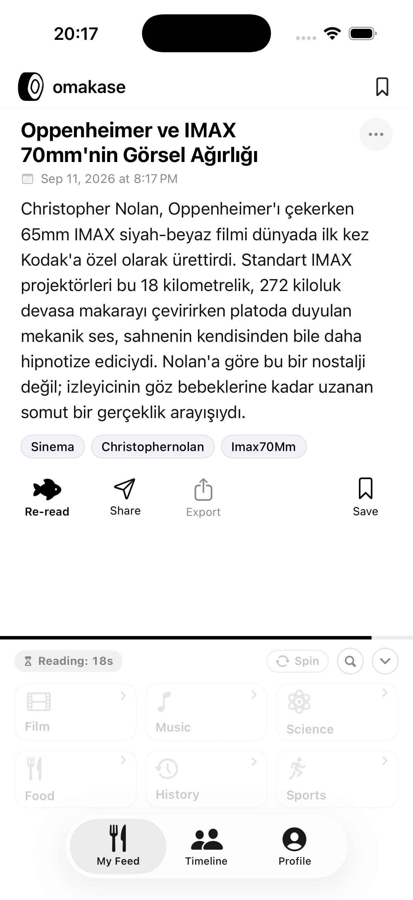
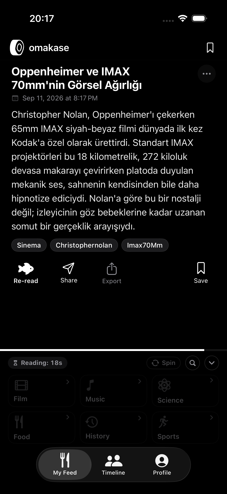
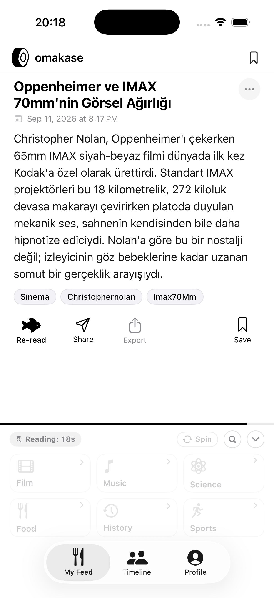
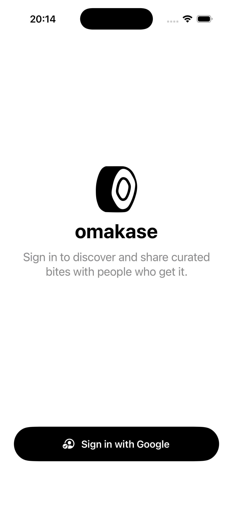

Algoritmaların gürültüsünden uzak, zihinsel damak tadınıza özel kültür akışı.
Letterboxd günlüğünüzü, ilgi alanlarınızı ve zamansız merakınızı gerçek zamanlı, doğrulanmış mikro-hikayelere dönüştüren kişisel bilgi şefiniz.

Canlı Şef Tadımı
Uygulamayı indirmeden önce doğrudan tarayıcınızda deneyimleyin. İlgi alanınızı seçin, şefin sizin için anlık mikro-hikaye hazırlamasını izleyin.
Bento Keşif Izgarası
O an ne tüketmek istediğinizi seçin:
Düşünceyi Besleyen Bir Deneyim
Sosyal medyanın dikkati parçalayan algoritmalarına karşı, zihinsel dinginliği ve hakiki öğrenmeyi önceleyen sistem mimarisi.
BentoTasteBox (2048 Tarzı Dokunsal Keşif)
Altı ana kategori (Sinema, Bilim, Felsefe, Müzik vb.), dokunsal 3D kart çevirme ve her kategoriye dokunduğunuzda Google Gemini ile anında türetilen 10 dinamik alt konu karosu. Algoritmaların tahminine mahkum olmadan, kendi iradenizle keşfedin.
Letterboxd Entegrasyonu
Letterboxd günlüğünüzdeki son 50 filmi tek tıkla analiz eder. Rastgele kilitlerle her açılışta izlediğiniz bir filme dair doğrulanmış kamera arkası trivia'sı ve yönetmen sırları üretir.
Doyum & Doomscrolling Koruması
Metin uzunluğuna göre 15 - 25 saniye akıllı sindirme süresi (reading cooldown) uygular. Hızlı kaydırma yerine metni gerçekten okutup sindirten benzersiz bir tüketim psikolojisi sunar.
Reels Tarzı Dikey Tam Ekran Akış
Instagram Reels formatında pürüzsüz sayfalama (.viewAligned). Server-Sent Events (SSE) üzerinden gelen kelimeler daktilo efektiyle anlık olarak ekrana canlı akar.
Tavşan Deliği (Deep Dive)
Bir konuyu daha derin öğrenmek istediğinizde tek tıkla o konuya özel kapsamlı şef follow-up analizini anında üretir ve sayfa düzeninizi bozmadan alt sheet okuyucuda açar.
Şefe Güvenin Felsefesi
Japon mutfak kültüründe "Omakase", seçimi şefe bırakmak ve onun ustalığına güvenmek anlamına gelir. Biz bu kavramı bilgi tüketimine taşıdık.
- • Sonsuz ve doyumsuz kaydırma (doomscrolling)
- • Öfke ve etkileşim odaklı kışkırtıcı başlıklar
- • Reklamlar, sponsorlu gönderiler ve dikkat hırsızlığı
- • Kullanım sonrası tükenmişlik ve zaman kaybı hissi
- ✓ Metni sindirten akıllı okuma süresi ve doyum psikolojisi
- ✓ Zamansız kültür, derinlikli sinema, felsefe ve bilim
- ✓ Sıfır reklam, sıfır gürültü, saf mürekkep & kağıt estetiği
- ✓ Kullanım sonrası zihinsel berraklık ve beslenmişlik hissi
Mürekkep ve Kağıt Sadeliği
Hidden Folks sanat tarzından ilham alan siyah-beyaz monokrom arayüz, gözlerinizi yormaz ve sadece içeriğe odaklanmanızı sağlar.
Açık Mod Akış
Doğal kağıt beyazlığı

Koyu Mod Akış
Derin OLED siyahı

İlgi Alanı Seçimi
Zevklerinize göre kalibrasyon

Giriş & Profil
Google ile tek dokunuş
Sıkça Sorulan Sorular
Omakase hakkında aklınıza takılabilecek teknik, felsefi ve kullanım detayları.